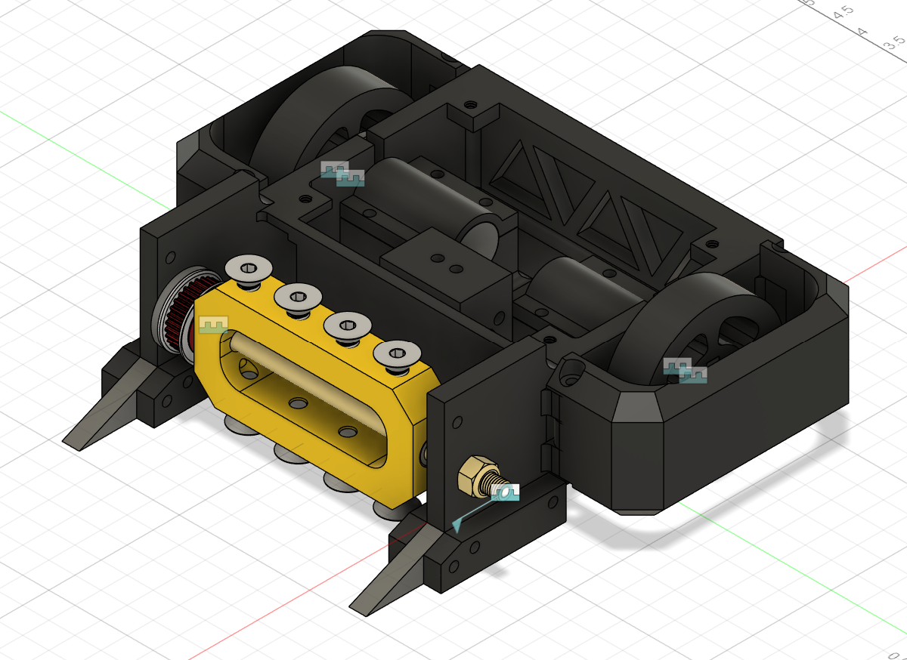

← Back to Home
3lb Beetleweight BattleBot
Role: Designer / Builder
Tools: Fusion 360 (CAD), Manufacturing / Assembly
Weight Class: 3lb Beetleweight
Overview
I designed and built a 3lb beetleweight combat robot, focusing on a compact chassis,
durable structure, and serviceable packaging. This project highlights mechanical design,
CAD iteration, and design-for-manufacturing thinking.
CAD Snapshot

CAD render of the beetleweight assembly (Fusion 360).
Design Goals
- Survive impacts with a rigid, protected chassis
- Keep components accessible for fast repairs between matches
- Maintain stable driving behavior and a low, controlled center of mass
- Prioritize reliable fastening, alignment, and repeatable assembly
Mechanical Design Highlights
- Chassis & structure: Designed around impact paths and fastener retention
- Drive packaging: Space-optimized layout for drivetrain and internal components
- Front module concept: Modular front/end geometry for easy iteration and replacement
- Serviceability: Layout intended for quick disassembly and part swaps
What I’d Add Next (Iteration Ideas)
- Document a weight budget and trade study (armor thickness vs. mobility vs. weapon)
- Add a simple structural check (load paths, bolt shear, bracket bending)
- Test plan: drivetrain traction, turning radius, and durability of front module under impacts
Key Skills Demonstrated
- Mechanical design, CAD iteration, design for manufacturing (DFM)
- Assembly planning, fasteners, tolerances, and packaging constraints
- Engineering communication: turning a design into a buildable system
Back to Home